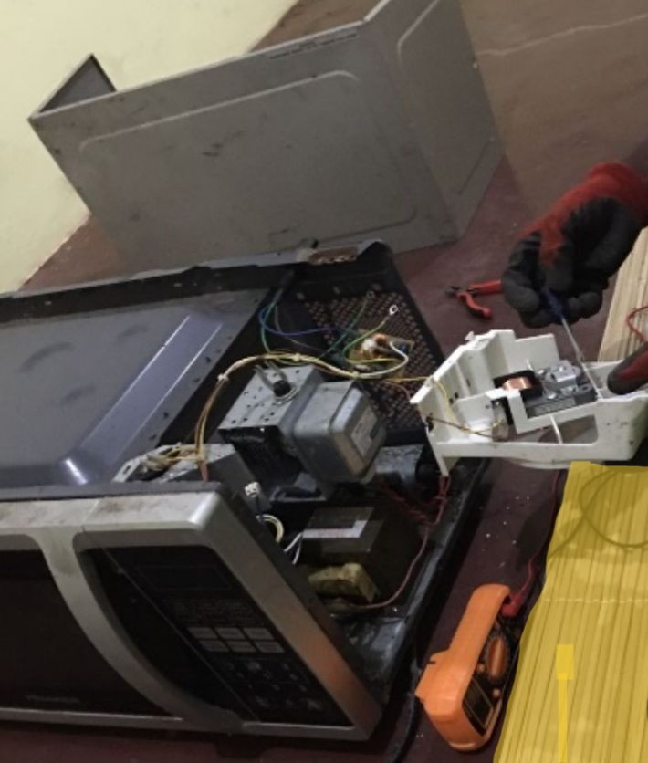
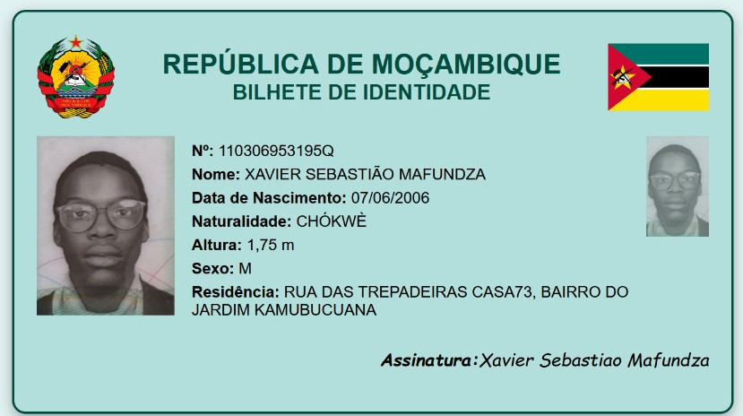

Meus Projetos

Projeto 1 (Montagem de uma rede sem fio)
Neste projeto foi executado Montagem de uma rede sem fio para duas salas numa instituição de ensino em que cada sala terá 10 Computadores, o projeto foi feito no Cisco Packet Tracer.

Projeto 2 (Reparação de Microondas)
Nesta reparação de microondas haviam alguns resistores que haviam sido soltos, então foi necessário adquirir novos resistores e soldar de volta.

Projeto 3 (Recriação de BI)
Criação de uma simulação digital de um Bilhete de Identidade moçambicano com HTML e CSS. O objetivo foi praticar estruturação e formatação de páginas web, aplicando conceitos de design e organização de informações.